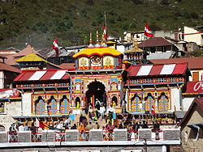

 Badrnath or Badrinarayan Temple is a Hindu temple dedicated to Vishnu which is situated in the town of Badrinath in Uttarakhand, India. The temple and town form one of the four Char Dham and Chota Char Dham pilgrimage sites. The temple is also one of the 108 Divya Desams dedicated to Vishnu, who is worshipped as Badrinath—holy shrines for Vaishnavites. It is open for six months every year (between the end of April and the beginning of November), because of extreme weather conditions in the Himalayan region. The temple is located in Garhwal hill tracks in Chamoli district along the banks of Alaknanda River at an elevation of 3,133 m (10,279 ft) above the mean sea level. It is one of the most visited pilgrimage centers of India, having recorded 1,060,000 visits.
The image of the presiding deity worshipped in the temple is a 1 ft (0.30 m), the black granite deity of Vishnu in the form of Badrinarayan. The deity is considered by many Hindus to be one of eight swayam vyakta kshetras, or self-manifested deities of Vishnu.
Mata Murti Ka Mela, which commemorates the descent of river Ganges on mother earth, is the most prominent festival celebrated in the Badrinath Temple. Although Badrinath is located in North India, the head priest, or Rawal, is traditionally a Nambudiri Brahmin chosen from the South Indian state of Kerala. The temple was included in the Uttar Pradesh state government Act No. 30/1948 as Act no. 16,1939, which later came to be known as Shri Badarinath and Shri Kedarnath Mandir Act. The committee nominated by the state government administers both the temples and has seventeen members on its board.
The temple is mentioned in ancient religious texts like Vishnu Purana and Skanda Purana. It is glorified in the Divya Prabandha, an early medieval Tamil canon of the Azhwar saints from the 6th–9th centuries AD.